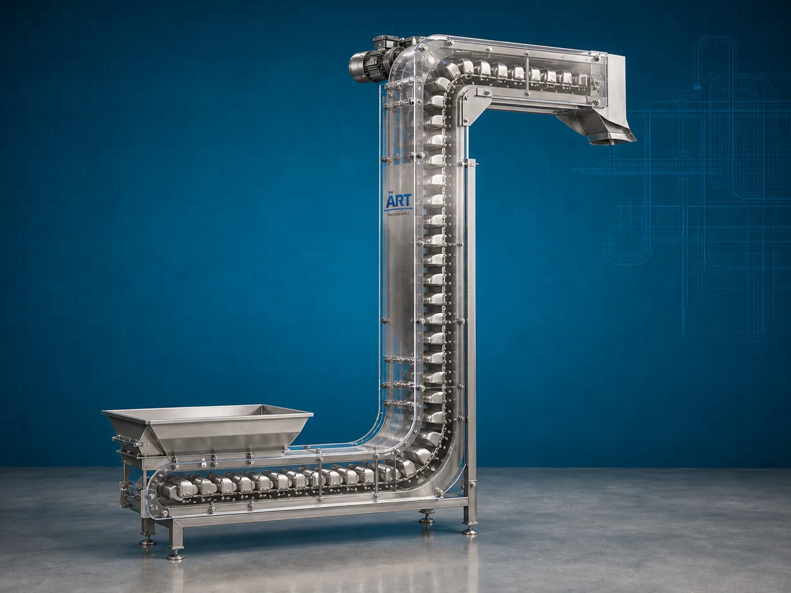

Z Type Elevator Machine (Industrial Z Type Bucket Elevator & Vertical Material Handling System)
A Z Type Elevator Machine, also known as a Z Type Bucket Elevator, Z Conveyor, or Industrial Z Type Elevator Conveyor, is an advanced material handling equipment designed for gentle vertical and horizontal conveying of food products, powders, granules, snacks, seeds, pellets, and bulk materials using specially designed buckets moving in a Z-shaped conveyor path.

About the Z Type Elevator
Z type elevator systems are widely used for:
- Vertical product conveying
- Gentle material handling
- Food-grade bulk transfer
- Packaging line feeding
- Automated product elevation
- Hygienic industrial conveying
The machine improves:
- Material handling efficiency
- Production automation
- Product safety and hygiene
- Labor reduction
- Space optimization
- Continuous process flow
Unlike conventional elevators, Z type elevators use:
- Food-grade buckets
- Z-shaped conveyor path
- Controlled bucket movement
- Gentle product transfer systems
to move materials smoothly without damaging fragile products.
Z type elevator machines are widely used in industries such as:
Food processing industries
Snack manufacturing plants
Packaging industries
Grain processing plants
Pharmaceutical industries
Dry fruit industries
Namkeen industries
FMCG industries
where hygienic and gentle vertical material conveying is essential.
The machine is highly suitable for:
- Snack conveying
- Namkeen handling
- Grain lifting
- Dry fruit transfer
- Packaging machine feeding
- Fragile product handling
ART Mechatronics offers high-performance Z Type elevator machines, engineered for continuous industrial operation, hygienic food-grade conveying, gentle material handling, and reliable long-term performance.
Working Principle of Z Type Elevator Machine
Snacks, granules, grains, dry fruits, or bulk materials are fed into bucket loading section
Motor-driven chain or belt system moves buckets continuously along Z-shaped conveyor path
Buckets lift and transfer material vertically and horizontally simultaneously
Machine conveys:
- Namkeen
- Snacks
- Dry fruits
- Seeds
- Granules
- Pellets
- Food ingredients without breakage or product damage.
Food-grade buckets and enclosed conveyor design maintain: Product cleanliness Hygienic operation Contamination-free conveying
Elevator integrates with: Packaging machines Weighing systems Multihead weighers Processing equipment Storage hoppers
Material discharged automatically into next process machine or packaging system
Types of Z Type Elevator Machines
- 1. Food Grade Z Type Elevator
Designed for: ✔ Hygienic food processing applications
- 2. Bucket Type Z Elevator
Uses: ✔ Bucket conveying mechanism for gentle product transfer.
- 3. Multihead Weigher Feeding Elevator
Suitable for: ✔ Packaging machine feeding systems
- 4. Stainless Steel Z Conveyor
Designed for: ✔ Corrosion-resistant food and pharmaceutical operations
- 5. Heavy Duty Industrial Z Elevator
Suitable for: ✔ Continuous industrial bulk material handling
- 6. Automatic Z Type Elevator
Designed for: ✔ Fully automated production and packaging lines
Industries Using Z Type Elevator Machines
🍃 Food Processing Industry Snack and ingredient conveying systems 🍟 Namkeen Industry Namkeen and chips handling systems 🌾 Grain Processing Industry Grain and seed conveying systems 🥜 Dry Fruit Industry Dry fruit and nut handling systems 📦 Packaging Industry Packaging machine feeding systems 💊 Pharmaceutical Industry Hygienic granule conveying systems 🛒 FMCG Industry Consumer product transfer systems 🍬 Confectionery Industry Candy and confectionery product handling systems
Features & Advantages
- Gentle handling of fragile products
- Hygienic food-grade conveying system
- Vertical and horizontal conveying in single machine
- Continuous industrial operation
- Space-saving compact design
- Low product breakage and damage
- Easy integration with packaging lines
- Energy-efficient operation
- Low maintenance and easy cleaning design
Technical Highlights
Elevator Type: Z type bucket elevator Bucket conveyor elevator Food-grade Z conveyor Construction: Stainless Steel / Mild Steel Bucket Material: Food-grade plastic buckets Stainless steel buckets Conveyor Arrangement: Vertical + horizontal conveying Drive System: Geared motor drive Chain or belt drive system Automation: Semi-automatic Fully automatic PLC-based systems
Turnkey Z Type Elevator Solutions
ART Mechatronics offers: Complete Z type elevator systems Packaging line feeding solutions Food-grade bulk material handling systems Conveyor and weigher integration systems Installation & commissioning After-sales service & AMC
Why Choose Art Mechatronics
Expertise in hygienic industrial material handling systems Customized Z type elevator solutions for multiple industries High-performance and durable industrial construction Energy-efficient and reliable conveying systems Proven industrial performance across sectors
Applications
Food Processing Plants Snack Manufacturing Facilities Packaging Industries Grain Processing Plants Pharmaceutical Manufacturing Units FMCG Production Plants
Related Conveying & Handling machines
Get pricing & specs for the Z Type Elevator
Share the product, target capacity, current process and plant location. These details help our engineers discuss the right machine or line configuration.
One partner, from design to start-up
ART Mechatronics designs, manufactures, installs and commissions your Z Type Elevator solution with regional presence in India, UAE and Thailand.